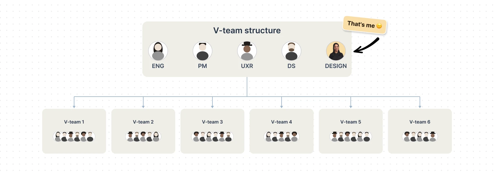
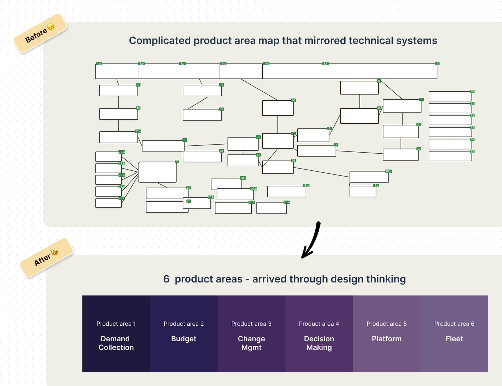
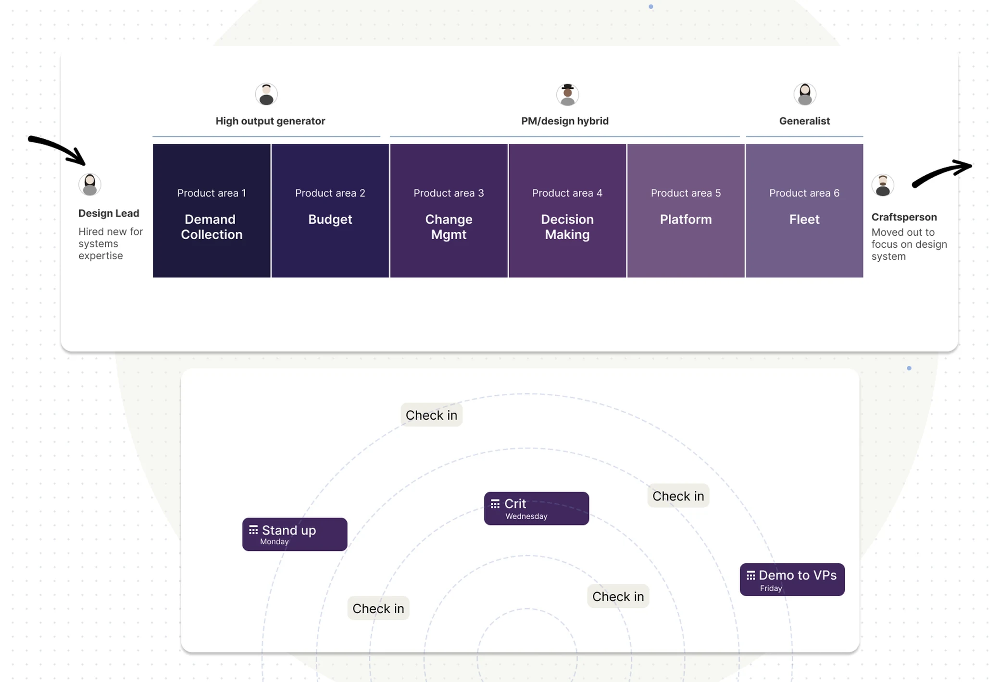
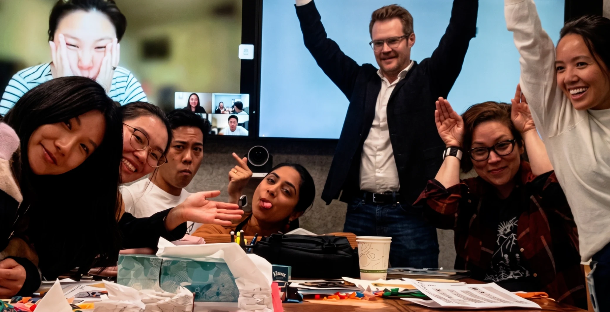
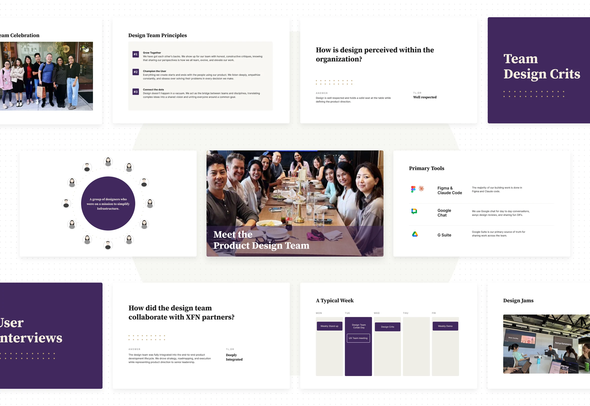
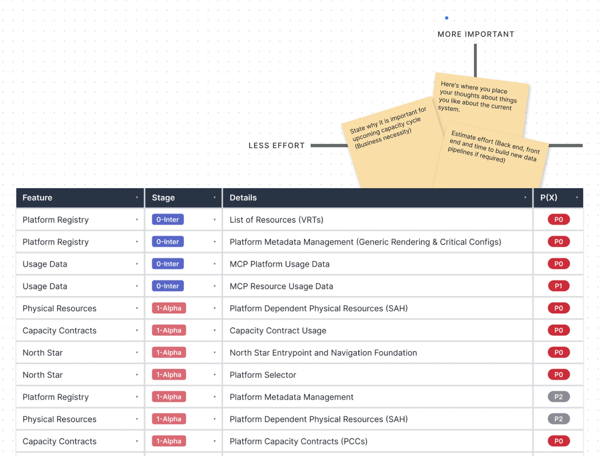
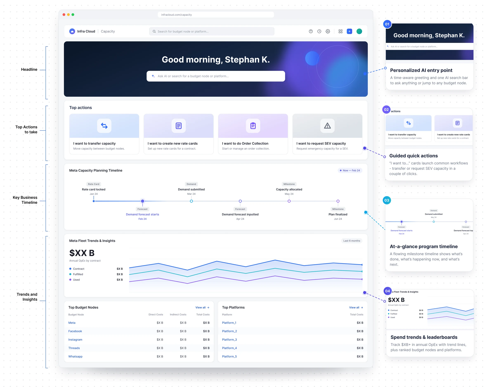
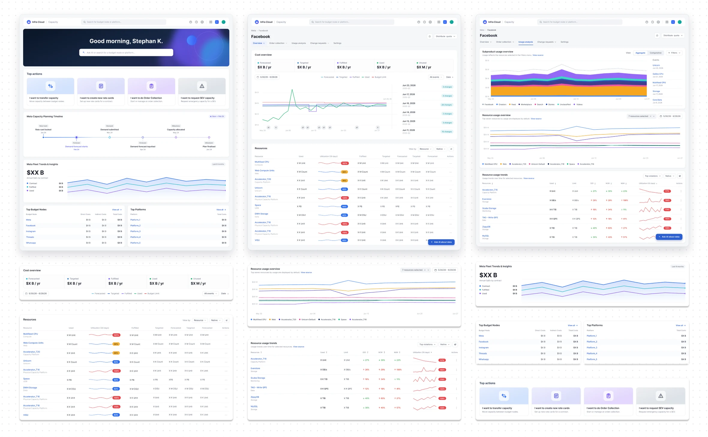

full bleed · 16:5
Scaling Meta's Global Capacity Infra
Architecting the vision, product strategy, and cross-functional teams that enabled $1B+ in capacity savings.
Billions of dollars of Meta's capacity were being planned in spreadsheets emailed between teams. I led the design of InfraCloud, the ecosystem that replaced them, and grew the org from 10 to 25 designers to build it - enabling $1B+ in savings and making design a strategic partner in an engineering-first org.
The Catalyst
It's 2023. The CEO asks how much it costs to run Instagram. Nobody in the room has an accurate answer.
Meta spends billions a year on capacity - storage, compute, and GPUs for AI training. Until that moment, no one could accurately answer who ordered it, when, or for what. The math lived in spreadsheets. Different teams had different spreadsheets. Some of them disagreed.
The CEO mandate landed weeks later: 95% of Meta's fleet must be on capacity contracts, every dollar attributed to a product, operating on a quarterly cycle the CEO would review. What existed to support all of that was a small library of spreadsheets passed between teams by email. Billions of dollars of capacity, moving through email attachments.
That is the business problem my team and I were asked to untangle in May 2023.
{kind=link}

The Vision: What We Set Out to Build
The work called for a single, unified ecosystem - software that understood Meta's infrastructure deeply enough to replace the fragmented spreadsheets. We needed one centralized place where every product (Facebook, Instagram, WhatsApp) could forecast demand, the infra team could plan against it, and leadership could see the full picture in a single view.
We called it InfraCloud. Through rigorous UX research and design sprints, we landed on six interconnected product areas that establish a single, shared language for how Meta discusses capacity.
{kind=link}

Process: The Map Before the Build
Capacity planning at Meta wasn't a single problem. It had 90+ interconnected workstreams, each with its own owners, terminology, and dependencies, spanning three user personas. No single design move was going to untangle that. We needed a way to look at the whole system before we started building.
We ran a three-week design sprint, leveraging prior UX research, with one central question: What are the jobs people actually do here, regardless of the tools they use today? We listed the jobs. We mapped them to end-to-end workflows. We ran a deliberate nouns-and-verbs exercise to build a shared taxonomy across every team touching capacity. By the end, 90+ scattered components had collapsed into six coherent product domains.
That reframe accomplished three things simultaneously: it defragmented the ecosystem. It shifted the focus onto real user workflows instead of inherited org charts. And it freed the team to design and build in parallel, establishing clear boundaries and dependencies for each domain.
Solutions are ephemeral.
Jobs are immutable.
People: Architecting the Team
The team I inherited was talented but burnt out from shifting priorities. To restore velocity and morale, I initiated a major org restructuring.
I started by matching designers to product areas based on their core strengths and archetypes, not just their job titles or levels:
- A systems thinker was brought in from another org to act as the design lead.
- The high-velocity designers took the workstreams that needed the most ground covered.
- PM-design hybrid designers tackled the messy, cross-functional decisions.
- I pulled one of our strongest craftspeople off the team entirely, freeing them to elevate the quality of everything we shipped across the board.
Then I established a cadence the team could trust: stand-up Monday, critique Wednesday, demo to leadership on Friday. The Friday demos became our load-bearing ritual. Every week, the leadership that funded our work saw our progress, and my designers saw their craft taken seriously by the room that mattered most. Within a quarter, the team's posture transformed. They were energized, autonomous, and excited about the problems they were solving.
{kind=link}

{kind=link}

{kind=link}

Product: Shipped in Pieces, Designed as One
Meta's capacity planning cycle ran every quarter, regardless of whether we were ready. Waiting for a "complete" tool would have meant shipping nothing in time to matter.
Our first product decision was a prioritization strategy. Instead of building toward a single monolithic launch, we broke the vision down into the smallest pieces that could unblock the next planning cycle. We ran a design-led prioritization exercise, mapping every candidate feature on importance versus effort, tying every choice back to a non-negotiable business milestone.
{kind=link}

Be optimistic, but be realistic.
Releases must tie to business milestones.
This clarity gave the team predictability and the permission to defer the rest.
From there, our cadence became our strategy. Each quarter, we shipped the feature that solved the most painful friction point of the upcoming cycle - demand forecasting, then budget views, then change management, then planning insights. Policies evolved, sometimes weekly, but our release rhythm absorbed the impact. We weren't chasing policy changes, we were planning around them. Leadership finally saw a roadmap that shipped on the dates it promised, and the design team got to spend their energy designing, not reacting.
Ultimately, craft is what ties the ecosystem together. Across all six product areas, we built consistent patterns - a shared timeline, shared notification logic, shared insight cards. Learning one part of the product meant knowing the rest. We broke the cycle of shipping tooling mapped to org charts.
{kind=link}

{kind=link}

Results
By architecting a high-performing design team and defining a clear, scalable product vision, my team and I enabled Meta to reliably manage and forecast capacity investments at a global scale. Beyond the software itself, this effort fundamentally shifted the operational culture - successfully establishing Product Design as a core, strategic partner within a historically engineering-first infrastructure organization.
What partners said about the work
“Your leadership through stakeholder complexity gave research the exact runway to build something delightful”
“Ramya successfully transformed a deeply complex topic into an intuitive and delightful product. She seamlessly brought cross-functional teams together and guided her team to navigate a difficult domain with emotionally charged stakeholders”
“I really appreciated your guidance through such a complex and demanding initiative”
Reflections
Navigating this level of ambiguity reinforced a few core principles that I now rely on to scale design teams and tackle complex ecosystems:
- Have a clear, meaningful vision. Without a clear, actionable vision tied to business reality, a team is simply a collection of people. Vision must be specific, actionable, and deeply tied to business reality.
- Be proactive - the “snowplow” mentality. In ambiguous environments, you cannot wait for the path to clear. You have to snowplow out ahead of your team so they can focus on craft and execution.
- Establish strong partnerships. Systems of this scale cannot be built in silos. Tight alignment early on across UXR, Data Science, PM, and Engineering is the only way to maintain momentum.